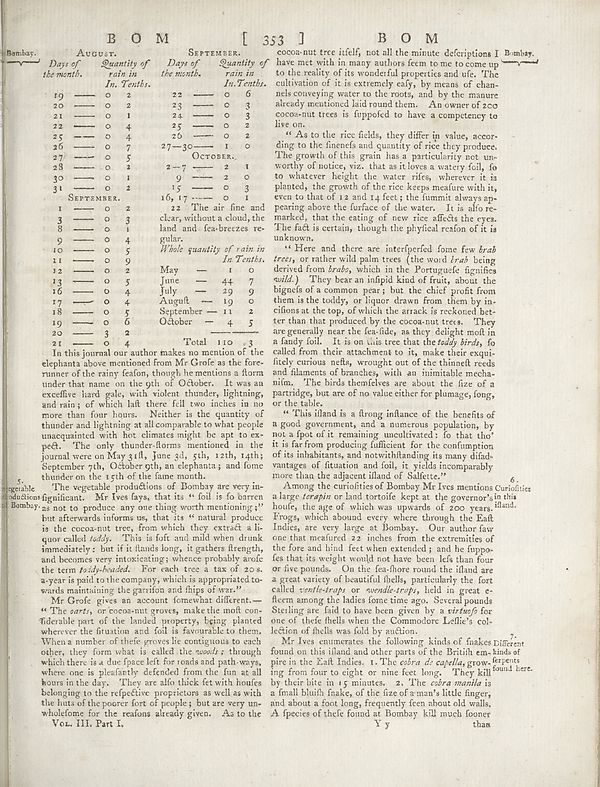

Scan ID britannica:309f765b1ecc83e0a7f7762e44b4a927a7555443:train:2131
Image SHA-256 f30c24bfdf3b22773525a1262af33f8a656dd6dbb04d030b3d3e030cbde5405a
Status: ok. Running header: BOM [ 353 BOM (catchword). Removed page furniture: Page-header: BOM [ 353 BOM.
PDF · raw Parse reply · LaTeX
Entries: E0182

| # | Class | Box | Parse 3.5 | Used text | Source |
|---|---|---|---|---|---|
| 1 | Text | [0.0068, 0.0578, 0.4404, 0.6156] | Bombay: AQUULY. SEPTEMBER. Day of Quantity of the month. Lain in In. Tenths. 19 - 0 22 22 - 0 2 20 - 0 2 23 - 0 3 21 - 0 1 24 - 3 22 - 0 4 25 - 0 2 25 - 0 4 20 - 0 2 26 - 0 7 27-30 - 0 0 27 - 0 5 Octobre. 28 - 0 2 2-7 - 2 1 30 - 0 1 9 - 0 31 - 0 0 2 15 - 0 3 SEPTEMBER. 16, 17 - 1 - 1 1 1 - 0 2 13 The air fine and 3 - 0 3 clear, without a cloud, the 9 - 0 1 had and fee-breczes re- 9 - 4 pulter. 10 - 0 5 While quantity of rain in 11 - 0 9 11 - 0 0 9 12 - 0 2 May - 1 13 - 0 5 June - 44 7 16 - 0 4 July - 19 9 17 - 0 0 4 August - 19 9 18 - 0 5 September - 11 2 19 - 9 - 6 October - 4 5 20 - 3 2 21 - | Bombay. AUGUST. SEPTEMBER. Days of Quantity of Days of Quantity of the month. rain in the month. rain in In. Tenths. In. Tenths. 19 0 2 22 0 6 20 0 2 23 0 3 21 0 1 24 0 3 22 0 4 25 0 2 25 0 4 26 0 2 26 0 7 27-30 0 0 27 0 5 OCTOBER. 28 0 2 2-7 2 1 30 0 1 9 0 31 0 2 15 0 3 SEPTEMBER. 16, 17 0 1 1 0 2 13 The air fine and 3 0 3 clear, without a cloud, the 9 0 1 land and sea-breezes re- 9 4 gular. 10 0 5 While quantity of rain in 11 0 9 11 0 0 9 12 0 2 May 1 13 0 5 June 44 7 16 0 4 July 19 9 17 0 0 4 August 19 9 18 0 5 September 11 2 19 9 6 October 4 5 20 3 2 21 0 4 Total 110 3 In this journal our | super_vl |
| 2 | Text | [0.0078, 0.6148, 0.4395, 0.7555] | The vegetable production of Bombay are very in- schoolfor significant. Mr Ives fays, that is it felt is fo between Bombay as not to produce more thing worth mentioning? but afterwards informs us, that its “natural product is the uncount tree, from which they extract a li- quor called today. This is full and mild when drink immediately, but if the hands long, it golden through, and becomes very interesting wherever probably made the term _field_-loaded. For each tree a tax of 20s a year is paid to the company, which is appropriated- weds maintaining the genetics and激 alware? | The vegetable productions of Bombay are very insignificant. Mr Ives says, that its "soil is so barren as not to produce any one thing worth mentioning;" but afterwards informs us, that its "natural produce is the cocoa-nut tree, from which they extract a liquor called toddy. This is soft and mild when drunk immediately: but if it stands long, it gathers strength, and becomes very intoxicating; whence probably arose the term toddy-headed. For each tree a tax of 20s. a-year is paid to the company, which is appropriated towards maintaining the garrison and ships of war." | super_vl |
| 3 | Text | [0.0771, 0.7547, 0.4375, 0.9117] | Mr Grofe gives an account fomewhat different— “The parts, or non-out grows, make the muff con- fidential part of the health property, being started wherever the futuation and foil is favorable to them. Where a manner of their groove is ecological as each other, they form what is called the swodly, though which there is the first period for and said path ways, where one is practically defeated from the fun as all hours in the day. They are also thick for wind bouts belonging to the respective proprietors as well as with the huts of the poorer fort of people; but are very un- wholders for the re | Mr Grofe gives an account somewhat different— “The parts, or non-out grows, make the muff con- fidential part of the health property, being started wherever the futuation and foil is favorable to them. Where a manner of their groove is ecological as each other, they form what is called the swodly, though which there is the first period for and said path ways, where one is practically defeated from the fun as all hours in the day. They are also thick for wind bouts belonging to the respective proprietors as well as with the huts of the poorer fort of people; but are very un- wholders for the re | super_vl |
| 4 | Caption | [0.0869, 0.9102, 0.208, 0.925] | Vol. III. Part I. | Vol. III. Part I. | super_vl |
| 5 | Text | [0.4502, 0.0617, 0.8916, 0.0852] | conomunt tree itself, not all the minute. decriptions I Bombay. | cocoa-nut tree itself, not all the minute descriptions I Bombay. have met with in many authors seem to me to come up | super_vl · expanded_beyond_parse |
| 6 | Text | [0.4492, 0.1641, 0.8906, 0.3086] | As to the rice fields, they differ in value, accom- ding to the fietsed and quantity of rice they probate. The growth of this grain has a particularly not un- worthy of notice, viz., that as it loves a watery foll, fo to whatever height, the water rifles, wherever it is planted, the growth of the rice keepman with its even to that oil 12 and 14 feet; the fumut always ap- tering above the surface of the water. It is also re- marked, that the ageing of raw rise affects the eyes. The fish is certain, though the physical region of it is unknown. | As to the rice fields, they differ in value, according to the fineness and quantity of rice they produce. The growth of this grain has a particularity not unworthy of notice, viz. that as it loves a watery soil, so to whatever height the water rises, wherever it is planted, the growth of the rice keeps measure with it, even to that of 12 and 14 feet; the summit always appearing above the surface of the water. It is also remarked, that the eating of new rice affects the eyes. The fact is certain, though the physical reason of it is unknown. | super_vl |
| 7 | Text | [0.4482, 0.3094, 0.8262, 0.5188] | Here and there are interperfed fome few _berab_ _trees_, or rather will palm trees (the wood trail being derived from limbs, which in the Portuguese, figuifies wild). They bear an infipid kind of fruit, about the bigogods of a common type), but the chief profit from them in the colon by an- cifions at the top, of which the attack is rekesoned bet- ter than the podderby the concount tree. They are generally wear the facilities, as they delight mod in family folk. It is on this tree that the _today birds_, fo called from their attachment to, make their equip- fiely curious petits, brought out of | Here and there are interspersed some few _brab_ _trees_, or rather wild palm trees (the word _brab_ being derived from _brabas_, which in the Portuguese signifies wild.) They bear an insipid kind of fruit, about the bigness of a common pear; but the chief profit from them is the toddy, or liquor drawn from them by in- cisions at the top, of which the arrack is reckoned bet- ter than that produced by the cocoa-nut trees. They are generally near the sea-side, as they delight most in a sandy soil. It is on this tree that the _toddy birds_, so called from their attachment to it, make their exqui- | super_vl |
| 8 | Text | [0.4473, 0.5195, 0.8271, 0.6133] | “This island is a drug influence of the benefits of a good, governments, and a numerous population, by not a spot of it remaining unaffnered.” So that the’ life from producing sufficient for the compliment of its inhabitants, and notwithstanding its many difad- mages of titanium and bulk, it yields incomparably more than the adjacent illand of Salette. 6. | “This island is a strong instance of the benefits of a good government, and a numerous population, by not a spot of it remaining uncultivated: so that tho’ it is far from producing sufficient for the consumption of its inhabitants, and notwithstanding its many disad- vantages of situation and soil, it yields incomparably more than the adjacent island of Salette.” | super_vl |
| 9 | Text | [0.4463, 0.6141, 0.8242, 0.8063] | Among the curities of Bombay Mr Ives mentions Curidioles a large temple or both tortured kept as the governed in his boat, the age of which was upwards of 20 years. Bland Frugs, which abound every where through the Fall Indies, are very large as Bombay. One author fav one that preferred 22 inches from the extremities of the front and final feet when extended it and its popo- far that its weight would not have been life into four or five pounds. On the fe-shore round the illand are a great variety of beautiful shells, particularly the fort called second-type, rounded corps, held in great re- fe | Among the curiosities of Bombay Mr Ives mentions a large terrapin or land tortoise kept at the governor's house, the age of which was upwards of 200 years. Frogs, which abound every where through the East Indies, are very large at Bombay. Our author saw one that measured 22 inches from the extremities of the fore and hind feet when extended; and he suppo- ses that its weight would not have been less than four or five pounds. On the sea-shore round the island are a great variety of beautiful shells, particularly the sort called ventue-traps or evenue-traps, held in great es- teem among the ladi | super_vl |
| 10 | Text | [0.4512, 0.807, 0.8232, 0.9266] | Mr Mrs Encuentrates the following kinds of flakes different found on this island and other parts of the British em-kind of pire in the Falk Indies. 1. The colors of cafylla, grow, depres its from four to eight or nine feet long. They fallould here. by their bite in 15 minutes. 2. The color marble is a small bluish fnake, of the fire of a man's little finger, and about a foot long, frequently ten about old walls. A species of their found as Bombay kill much longer than | Mr Ives enumerates the following kinds of snakes found on this island and other parts of the British em-pire in the East Indies. 1. The cobra de capella, growing from four to eight or nine feet long. They kill by their bite in 15 minutes. 2. The cobra manila is a small bluish snake, of the size of a man's little finger, and about a foot long, frequently seen about old walls. A species of these found at Bombay kill much sooner than | super_vl |
Britannica scans: National Library of Scotland, CC0 1.0. Wikipedia text: Wikipedia contributors, CC BY-SA 4.0, revision links on each page. Generated 2026-10-18T13:26:14+00:00.